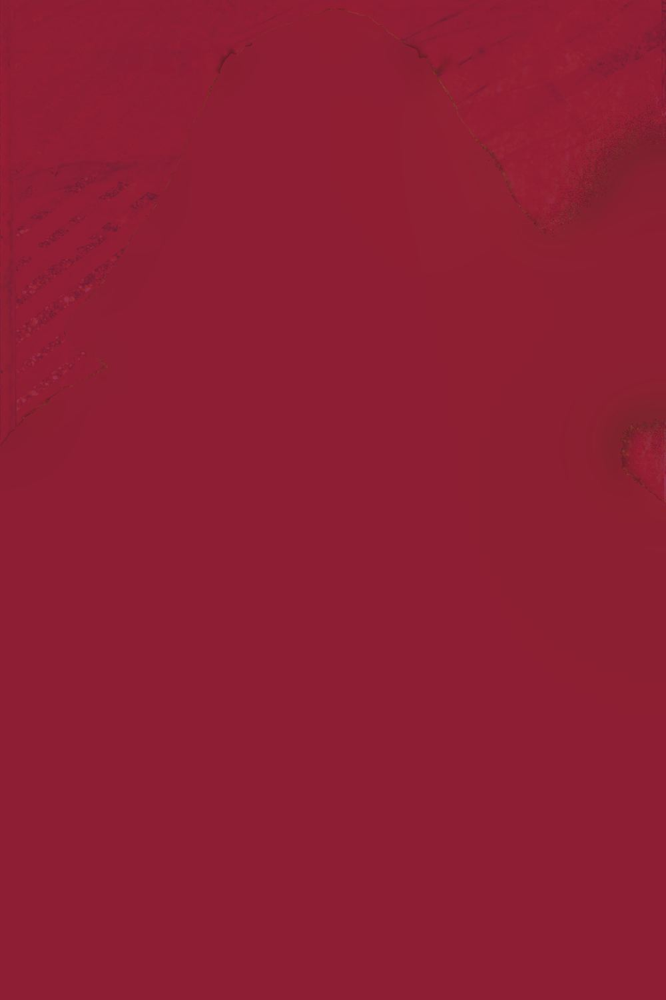
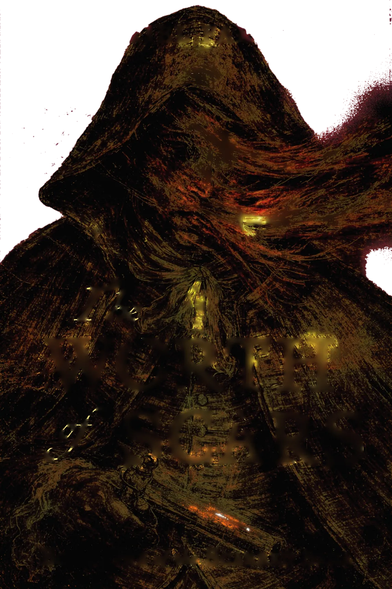
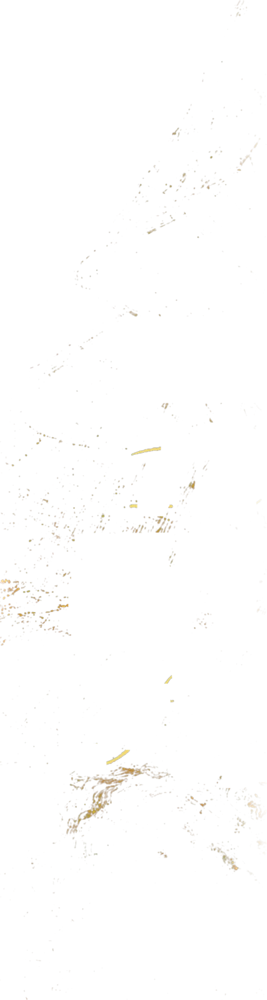
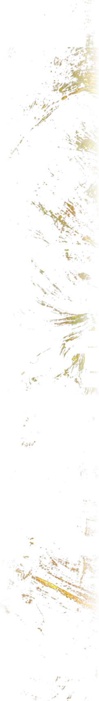
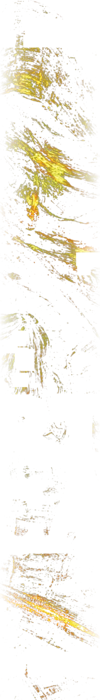
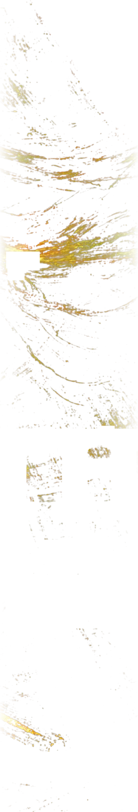
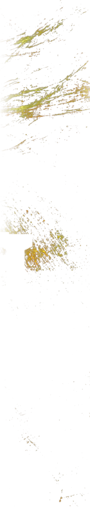
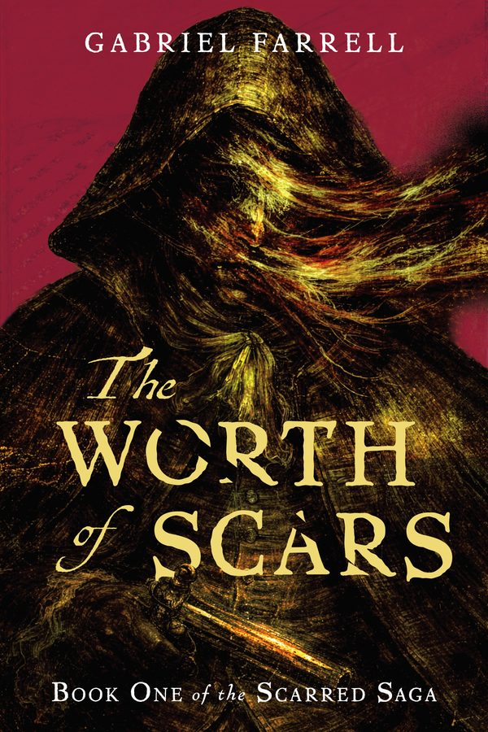

Is saving the world worth becoming one of the shunned, self-mutilating sorcerers known as the Scarred?
The Worth of Scars
Book one of the Scarred Saga. Out now in hardback, paperback and ebook.

The Worth of Scars
An epic flintlock adventure with a twist, The Worth of Scars follows a collection of tragic misfits on a journey to destroy humanity’s ancient enemy, the Serafin.
Yet only those with the powers the Serafin once gifted humanity can defeat them, a gift that was long ago tainted.
Each must decide: is saving the world worth becoming one of the Scarred?
For fans of Joe Abercrombie, Brian McClellan and George R.R. Martin. Dark, very much not for everyone, and over twice the length a debut is meant to be.
4.4 on Goodreads from the first twelve reviews, featured in Grimdark Magazine and on Fanfiaddict, and number seven in IngramSpark’s fantasy rankings in its first fortnight.
Signed copies, in person
Sun 22 Nov
Oxford Indie Book Fair
The Oxford University Exam Schools, High Street. Free and open to everyone. Signed copies of The Worth of Scars, and do say hi even if you don’t fancy buying one.
24 and 25 Oct
BristolCon
Signed, personalised copies in the dealers’ room, a reading from the book, and a panel.
Gabriel Farrell
I live in Oxford, walking those hallowed streets in the footsteps of fantasy legends I one day hope to emulate. I grew up in rural Wiltshire, studied Film and Writing, and read and consulted on screenplays for the likes of BAFTA, Netflix and the BBC.
Then came COVID, and a year of kitchen-table arguments made gritty drama a lot less appealing. I went back to Tolkien, Martin and Pullman, found Jordan, Abercrombie, Hobb and Sanderson, and started the book.
I also cook. Much of The Worth of Scars was dreamt up while simmering sauces, peeling vegetables or searing meats, which may explain the grimness of its magic system.